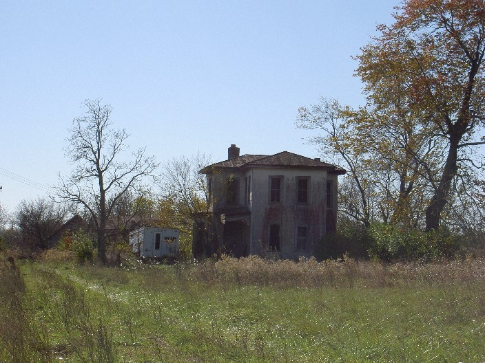

Kropp Road Haunted House

An abandoned house on Kropp Road, in Pleasant Township, Franklin County, is known locally to be haunted. If you take a camera or a flashlight inside, the batteries will be drained in no time flat. They say that the owner lives across the street and is not friendly to people trying to investigate, but it might still be worth a try. Maybe you can tell me more about who the ghosts are and what they want.
You'll find the house just a little way down the road from Pleasant View Middle School, where I went for sixth and part of seventh grade.
Back